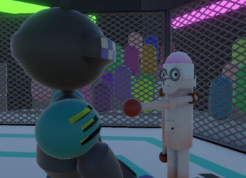
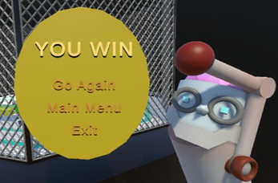

Factory
Fight Club
FFC is a 3D Action Roguelike Game similar to Tekken with elements of Risk of Rain 2 and Enter the Gungeon, where players fight robots and equip themselves with unique upgrades.
Gameplay Overview



Core Loop
Player is greeted with an enemy, if the player becomes victorious they are rewarded with the option of adding a new upgrade to the robot. The player will get to test out their new upgrade against the next foe who is a tad bit stronger than the last.
Win Condition
Take on every competitor Factor Fight Club has to offer and win the tournament!
The Why
Most fighting games stick to the traditional separate characters, our twist to the genre was to introduce a new one, Roguelike. Adding a Roguelike element to the fighting genre is something that has not been thorughly explored and is something my group and I wanted to experience.
Inspiration
Having recently played Elden Ring, I love the way enemies are handled in that game and wanted to take some inspiration. Each enemy has their own personality on the backend, some start off more aggressive and some start off passive depending on the round type.
Programming & Systems
Combat System
The combat system is handled by unity animation events, there is a window that opens up and checks to see if the hand box collider intersects the enemy or players hitbox. The enemy combat system is handled by the meter that is talked about in Enemy AI. Each enemy state has its own pool of animation sets to pull out of ranging from defensive animations, attack animations and basic would pull an even amount from both.
Enemy AI
All enemies have a "meter" spanning from 1 - 10, 1 - 4 is defensive, 5 - 7 is basic and 8 - 10 is aggressive. That meter is dictated by the actions of the player, if the player hits the enemy the meter will go down one value and if the enemy lands a hit the enemy meter will increase by one value.
Project Manager
Voted as project manager I assigned tasks, goals, deadlines, artstyle & maintained a positive team environment. Being project manager taught me so much aside from the game development portion, I learned how to conform to teammembers making sure everyones job is as easy as possible.